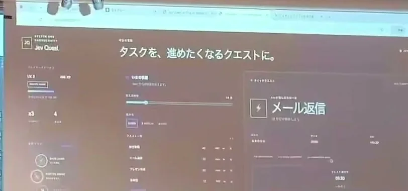

このUIがしていること
作者は、「やらなきゃ」を「やってみたい」に変えるアイデアだと述べている。タスクの中身は変えずに、見せ方と、終えたあとの反応を変える。
- いま取り組む1件を、大きなカードで前に出している。一覧の中から選ぶ負担を、減らす狙いに見える。
- 達成すると、モーダルで経験値が入る。完了の操作に、はっきりした反応が返る。
- どのタスクが、なぜ前に出されたかの説明は、読み取れる範囲には出ていない。利用者が選び直せるかも、確認できていない。
- 経験値の量（+100と+65）がどう決まるかは、分からない。
キャプチャ
{kind=link}

（原寸の画像を開く）見る箇所左上の「Jev Quest」、見出し「タスクを、進めたくなるクエストに。」、右の大きな「メール返信」のカード、左の経験値とレベルらしい表示
入力から画面の変化まで
-
判断への入力
日々のタスク。作者の投稿は「Jevを使って日々のタスクを整理し「クエスト」に変換」と述べている。入力の形式は、動画からは読み取れない。
-
Jevの判断
調査記録によれば、投稿は、Jevがタスクをクエストに変え、有力な候補を選ぶと説明している。質問文、候補、確率は、画面から確認できない。
-
結果がUIをどう変えるか
「メール返信」というクエストのカードと、進み具合や状態の表示。動画の後半では、達成と報酬のモーダル（「+100 XP」「+65 XP」）が出る。
- 判断型の見立て
- 不明出典から判断できない
- 投稿はJevでタスクをクエストに変換すると述べるが、何を尋ねているか（質問型）は動画の画面から確認できない。
Jevとの適合
複数のタスクから、いま前に出す1件を選ぶ判断は、有限の候補からの選択であり、Jevに向く。ただし、この事例では判断の中身が画面に出ておらず、どこまでをJevが担っているかは、作者の説明に頼っている。
確認範囲と未確認事項
日本語の作者による投稿動画から静止画を確認。ハッカソンの会場で、スクリーンに映した画面を手持ちで撮った短い動画で、細かい文字は読み取れない。公開された成果物やコードは見つかっていない。Jevがタスクをクエストに変えるという点は投稿の説明によるもので、Jevの出力や確率は画面から確認できない。今回追加した事例の中で、根拠は最も弱い。
- 確認済み動画から得た静止画に見える「Jev Quest」の名前、見出し、「メール返信」のカード、左の状態表示。動画の後半の達成と報酬のモーダル（+100 XP、+65 XP）。投稿文の説明
- 未検証Jevへの入力と出力、クエストへの変換の中身、候補の選び方、経験値の計算、利用者による選び直しの可否、公開された成果物やコードの有無。動画は短く、細かい文字は読み取れない
- 推定扱いいま取り組む1件をJevが選んで前に出している、という読み方。投稿の説明からの見立てで、画面では確認できない
- 引用X投稿は2026-09-20（UTC）。動画から、スクリーンに映った画面の範囲だけを切り出して引用（会場と参加者の写り込みを除いた）。権利は作者に帰属する